History
Ever since our founding, we have evolved in response to changing times, always seeking to support the health of our customers.
-

Part 1: 1912 to 1960
Laying the Foundations
Taisho Pharmaceutical was founded in the early twentieth century, a time when medical standards and personal nutrition in Japan were still lacking, to support healthier living and illness prevention through over-the-counter (OTC) drugs.
After the end of the Second World War, to play our part in a speedy national recovery, we introduced new technology into our factories to expand our product range to encompass prescription pharmaceuticals as well. With the advent of commercial broadcasting and the television’s rapid spread throughout Japan, our commercials featuring our recognizable eagle mark rapidly made Taisho Pharmaceutical a household name.OPENCLOSE -
-
1912
For illness prevention and health promotion
Diseases like beriberi and tuberculosis were still relatively common in Japan. Taisho Pharmaceutical was founded with the goal of creating nourishing tonics to prevent these ailments without relying on imports.
At the time, medicines were still distributed through commission merchants, but we expanded our sales channels by establishing a unique direct sales system. This strategy became a rock-solid foundation for us in the OTC drug field.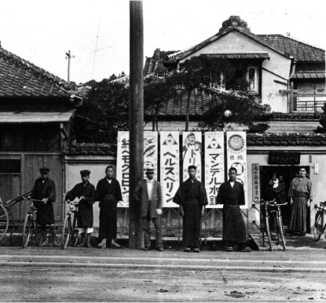
-
1918 End of the First World War
-
1927
Gaining the support of customers by meeting the need for easy-to-consume medicines
From its inception, Taisho Pharmaceutical launched one OTC drug after the other. After a succession of products such as nourishing tonics, children's cold medicines and digestive medicines, Taisho Pharmaceutical unveiled a product that would become one of its best-known and longest-selling items: Pabron, a cough suppressant. The name derived from a combination of "Pan-," meaning "all," and "bron" from "bronchitis," hence "for all coughs." The ease with which Pabron could be ingested won it tremendous customer support.
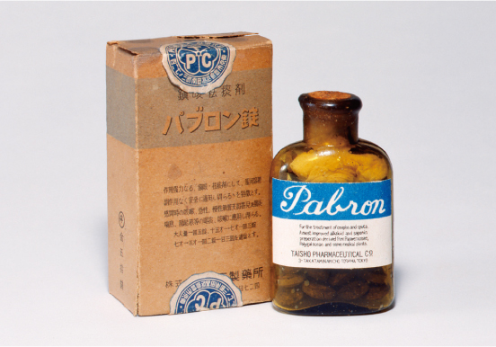
-
1945 End of the World War II
-
1948
Changing the name to Taisho Pharmaceutical Co., Ltd.
-
1953
Release of Dermarin, a treatment for skin ailments. Its powerful efficacy was noted even by dermatologists and made it a major hit. This also gave us a foothold for our later expansion into prescription pharmaceuticals.
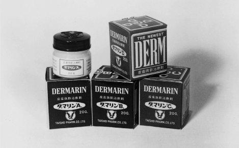
-
1955
Look for the eagle mark
Registration of our eagle mark as a trademark and beginning of its use in product advertising. Striking and clear, the eagle mark drove a sharp rise in name recognition for Taisho Pharmaceuticals.
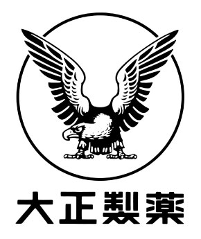
-
1957
Release of our Iris eye drops. This would later be developed into a long-selling series of products.
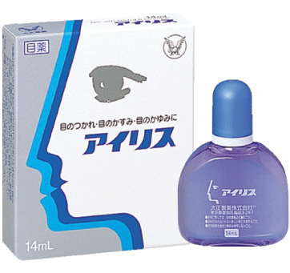
-
1957
Seizing growth opportunities and manufacturing our first prescription pharmaceuticals
As more and more of Japan’s population joined the country’s new national health insurance scheme, demand for pharmaceuticals soared. Seeing the potential for growth in the industry, we decided to enter the prescription pharmaceuticals market. Building on the success of our dermatological agent Dermalin, we released Psorion, a prescription drug that treated psoriasis.
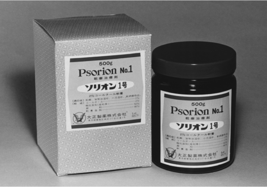
-
1960
Release of the analgesic Naron. This would become our flagship analgesic brand.
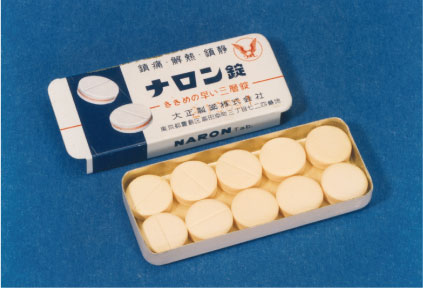
CLOSE -
-
Part 2: 1961 to 2001
Pursuing Growth
In the 1960s, the “Japanese economic miracle” filled homes and workplaces with vitality and drove healthcare needs higher. Against this social background, our energy drink, Lipovitan D, was an unprecedented, record-breaking hit. This allowed us to secure an unshakable position as an OTC drug manufacturer.
In the 1970s, we responded to extended economic stagnation by revising our sales structure, and in the 1980s we focused on building R&D capacity. By forming relationships with overseas companies and expanding our prescription pharmaceuticals business, we established a position as a comprehensive pharmaceutical company.OPENCLOSE -
-
1962
Becoming an OTC leader by inventing energy drink culture
At a time when medicines were generally associated with a bitter taste, Taisho Pharmaceutical won kudos for marketing an energy drink with an appealing flavor. Determined to make products that were more delicious still, we launched Lipovitan D, an energy drink that everyone could enjoy consuming. Lipovitan D was a perfect fit for an era in which health-consciousness and luxury grocery items were taking root among Japanese consumers, and proved a major hit. By inventing the energy drink culture, Taisho Pharmaceutical became a leader in the OTC drug field.

-
1963
Taiwan: Our first overseas market
Release of Lipovitan D in Taiwan. Two years later, in 1965, we began exports to Thailand. Southeast Asia became the center of our overseas sales expansion initiatives.
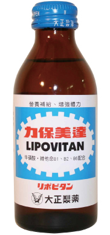
-
1964 Tokyo Olympic Games
-
1967
Release of the antiphlogistic pain reliever Opyrin, marking our expansion into orthopedics.
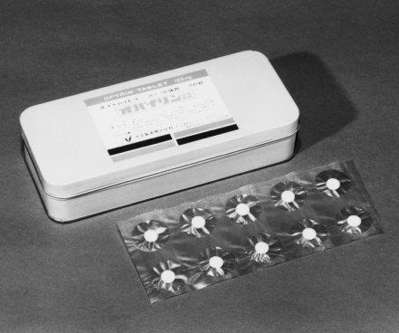
-
1974
Broadening our research focus for global competitiveness
Aiming to establish an unshakable foundation in prescription drugs and become more competitive internationally, we built a comprehensive research center on the grounds of our Omiya Factory. This was the beginning of our biotech research.
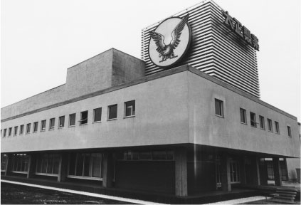
-
1978
Addressing the stomach troubles of today
Release of the stomach medicine Taisho Kampo, offering relief from a wide range of symptoms. The advertising campaign evoked scenes of festive overindulgence leading to digestive trouble later, which struck a chord with the public and made the product a hit.
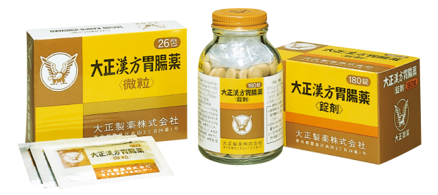
-
1984
Release of the gastric ulcer treatment Solon, our first foray into internal medicine. Adding efficacy against gastritis in the following year improved sales further.
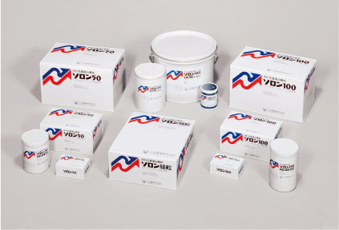
-
1985
Establishing the Uehara Memorial Foundation
Promising early-career researchers should never be forced to abandon their work for financial reasons: this was the idea that drove us to establish the Uehara Memorial Foundation. In 1985, the foundation began providing assistance for research in order to help the life sciences grow in Japan and promote general health and welfare.
-
1988
Founding of Taisho Pharmaceutical California and first energy drink sales in North America.
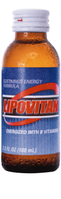
-
1988
Release of Palux® Injection, a peripheral vasodilator effective against chronic arterial occlusion and similar conditions.
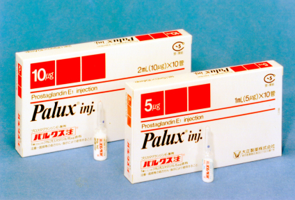
-
1991
Developing world-class antibiotics in-house
In the early 1990s, creating an original antibiotic to world-class standards was considered a highly difficult feat. Our release of Clarith® Tablet, an antibiotic easily meeting these international standards, demonstrated the advanced level of our R&D department.
We continued to expand the drug’s applications and improve our manufacturing methods after its release, helping it develop into a treatment sold around the world.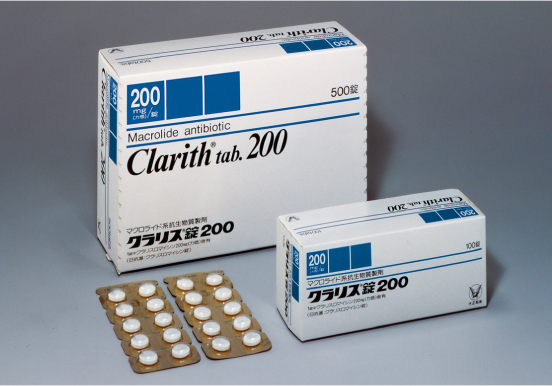
-
1992
Release of Zena F-II, a drink based on our long-cultivated beverage development techniques combined with crude drug research.
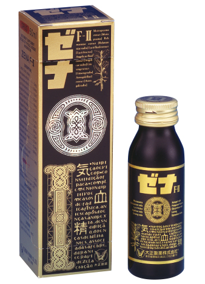
-
1997
Improving competitiveness by acquiring powerful brands
In order to continue to differentiate ourselves in a maturing market with products offering tradition, trustworthiness, and quality, we embarked on a strategy of acquiring major existing brands. As part of this initiative, we inherited the Colac laxative business from the Procter & Gamble Group.
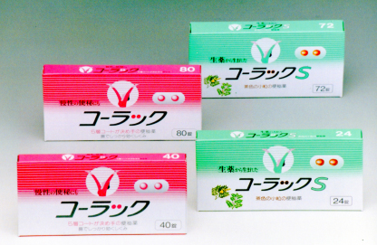
-
1999
Deregulation boosts Lipovitan D sales
Until 1999, energy drinks like Lipovitan D were classified as drugs and sold only in pharmacies and drugstores. With the deregulation of pharmaceutical sales, however, they were reclassified as "quasi-drugs." This made it possible to sell Lipovitan D in convenience stores, supermarkets, and even vending machines, making it even more familiar to consumers.
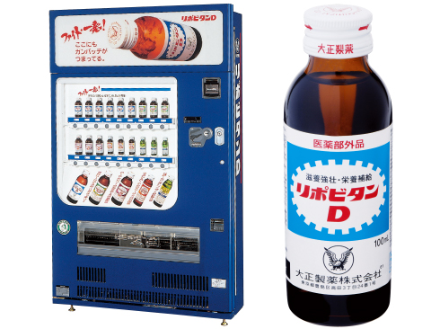
-
1999
Creating a market with RiUP, Japan’s first hair regrowth treatment
When American pharmaceutical company Upjohn developed the hair regrowth treatment Minoxidil, we saw its potential immediately. After signing a technology introduction contract in 1985, we spent 14 years on research to develop RiUP, Japan’s first hair regrowth treatment for common baldness. RiUP was also Japan’s first direct-to-OTC drug, approved for over-the-counter sales with no intervening prescription pharmaceutical phase.

-
2001
Release of non-steroidal anti-inflammatory analgesic Lorcam® Tablet, which used quick-release technology to increase blood concentration faster.
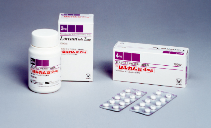
-
2001
Established Taisho R&D USA and began developing prescription pharmaceuticals in the US.
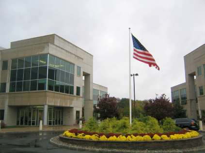
CLOSE -
-
Part 3: Since 2002
Evolving Further
Against a background of global economic slowdown, the pharmaceutical industry remained active, with major corporations engaging in M&As and restructuring.
Amid these developments, we are working to improve our competitiveness both domestically and internationally in a variety of ways: acquiring OTC brands, expanding into health foods and online sales, forming business and capital alliances with other companies, and actively working to expand our OTC drug business in Asia. We continue to develop our self-medication and prescription pharmaceuticals businesses as we evolve into a global company offering total support for health.OPENCLOSE -
-
2002
No. 1 in cough drops
Acquisition of the global brand VICKS from the Procter & Gamble Company in the US. We now have the largest share of the Japanese cough drop category and continue to expand our lineup of VICKS cough drops and other products.
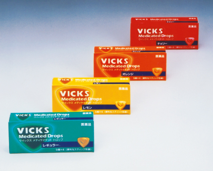
-
2003
Using pharmaceutical expertise to support health through food products
Even as modern life grows richer, lack of exercise and irregular eating habits drive increased incidence of lifestyle diseases. To address this challenge to society in our capacity as a drug manufacturer, we launched Livita, a food and supplement brand covering every area of health. Our goal with Livita is to support people with product development based on safety and effectiveness. Following the launch of this brand, we began reinforcing our development of food and supplements as a peripheral part of our self-medication business.
-
2005
Release of RiUP Lady, a hair regrowth treatment for women, in response to demand from women struggling with hair issues.
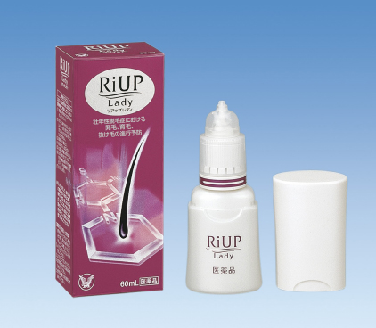
-
2005
Release of Pabron™ and Taisho Kampo™ in Thailand, part of our strategy of using our know-how gained in Japan to develop our OTC drug business in Asia.
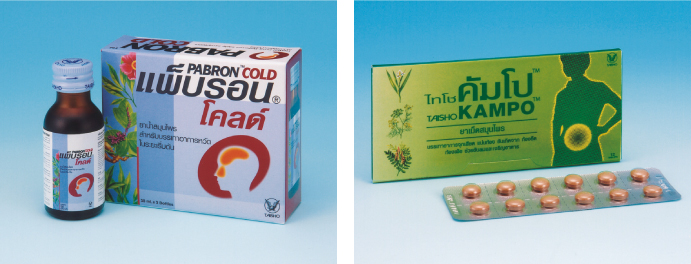
-
2006
Launch of Taisho Direct and more proactive information-sharing
In response to changes in consumer buying patterns, and to create new sales opportunities, we launched the direct-to-consumer sales website Taisho Direct. Through Taisho Direct, we put even greater effort into sharing clear and simple information with consumers, offering helpful advice and explaining product benefits based on scientific data.
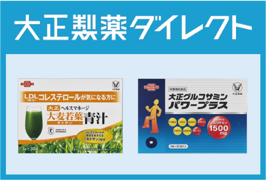
-
2006
Release of Pabron™ and Taisho Kampo™ in Malaysia. The Pabron series continues to grow, targeting specific symptoms.
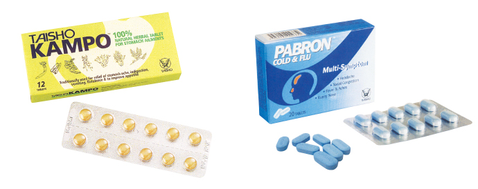
-
2007
Release of Geninax® Tablet, a quinolone oral anti-bacterial agent.
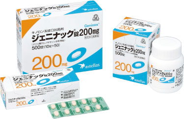
-
2008
In conjunction with the Isetan department store, we released hisoca, a concentrated herbal beverage developed through extended research on traditional East Asian medicinal components and herbs.
This product has found many loyal buyers among beauty-conscious women.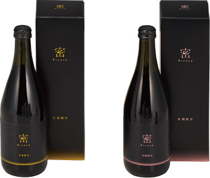
-
2008
Obtaining a top brand in the intestinal field
Acquisition of Biofermin Pharmaceutical, maker of Biofermin®, as a consolidated subsidiary. This allowed us to enter the field of intestinal medicine for the first time with Japan’s top brand in that category.
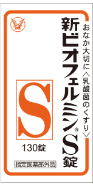
-
2008 Global Financial Crisis
-
2009
We entered the Asia ex-Japan OTC drug market
To strengthen the position of the Self-Medication Operations Group in Asia ex-Japan, which is expected to enjoy brisk growth in this region, Taisho Pharmaceutical purchased the trademarks for certain OTC drugs held by US-based Bristol-Myers Squibb (BMS) in the region and acquired PT Bristol-Myers Squibb Indonesia Tbk (BMSI) as a consolidated subsidiary.
-
2011 Great East Japan Earthquake and Tsunami
-
2011
Release of the osteoporosis agent Edirol® Capsule, developed jointly with Chugai Pharmaceutical. This was the first time in 22 years that an activated vitamin D3 agent was released in Japan as a new drug.
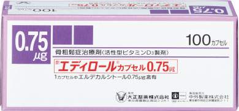
-
2011
Expanding our business base in Asia through M&As
We acquired all the shares of Malaysia’s HOE (Hoepharma Holdings Sdn. Bhd.), which has the top share of that country’s prescription dermatological treatment market. HOE also sells products in 40 countries in and around Asia. This M&A helped our self-medication business make a major advance into Malaysia, expanding our business base in the Asian region.
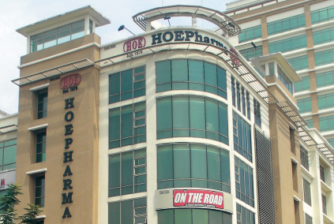
-
2011
Acquiring major brands in Southeast Asia
To cultivate the Southeast Asian market further, we acquired US company Johnson & Johnson’s brand equity in motion sickness medications Bonamine® and Dramamine® in the Philippines, Indonesia, and Thailand.
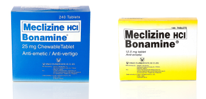
-
2011
Establishment of Taisho Pharmaceutical Holdings with the aim of achieving sustained growth both domestically and internationally. We continue to refine our group structure.
-
2012
Acquisition of Japanese pharmaceutical manufacturer Tokuhon Corporation as a wholly owned subsidiary. The corporate structure lets us make full use of Tokuhon’s experience in the topical medication market, both OTC and prescription.
-
2012
Expanding our business in North America
In Mexico, where we had been selling energy drinks since 2002, we acquired four local pharmaceutical companies, including CICSA, as part of our first major foray into the OTC drug market there. CICSA’s sales network and manufacturing facilities helped us to expand our business elsewhere in the North American region as well.
-
2012
Reinforcing our foundations in Thailand
We merged our Thai-based OTC drug business with that of Osotspa, a partner in our energy drink business. The resulting company, Taisho Osotspa Pharmaceutical, continues to develop its business along the two lines of energy drinks and OTC drugs.
-
2012
Acquisition of UV care brand Coppertone®, developed by US company Schering-Plough but well known in Japan as well.
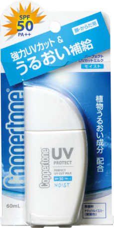
-
2013
Release of Epadel T, a treatment for improving abnormal triglyceride levels, following conclusion of a sales contract with Mochida Pharmaceutical.
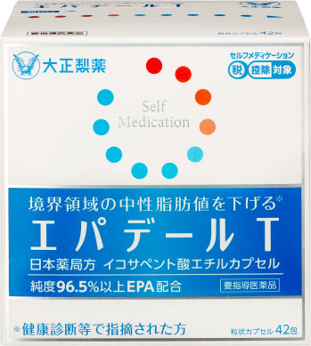
-
2013
Meeting the needs of an aging society with osteoporosis treatments
Released Bonviva® IV Injection, a bisphosphonate osteoporosis treatment that can increase bone mass and prevent breaks with just one dose per month. This drug was developed jointly with Chugai Pharmaceutical.
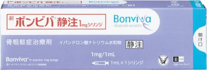
-
2014
Contributing to early treatment of type 2 diabetes with a treatment developed in-house
Seven years after we began research into diabetes treatments, we released Lusefi® Tablet, a treatment we created, developed, and gained approval to manufacture and sell. Lusefi is an SGLT2 inhibitor that lowers blood glucose levels by increasing urinary glucose excretion.
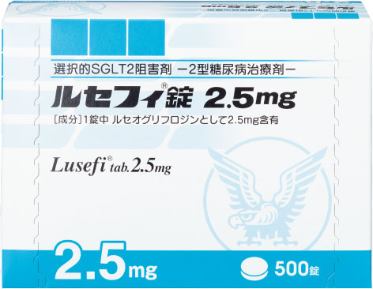
-
2014
Acquiring a powerful brand presence in the Philippines
Acquired Philippine brand equity and trademark rights to Flanax®, an anti-inflammatory analgesic from Swiss company Roche.
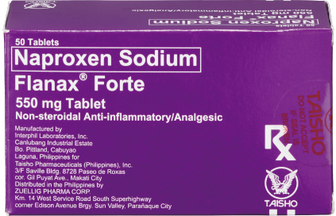
-
2014
Released COBARASAPŌTO, a weight loss support drink in the health food domain of our self-medication business. In 2015, one year later, we released the carbonated energy drink RAIZIN.
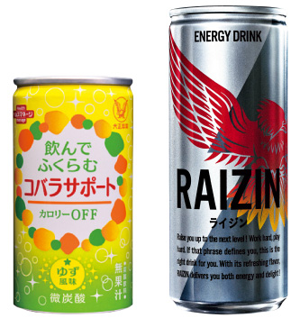
-
2016
Acquisition of shares in Dr. Program, a cosmetics manufacturer.
-
2016
Improving quality of life with pain-relieving patches
Following a joint development project with Group company Tokuhon we released LOQOA® Tape, an externally applied treatment for osteoarthritis.
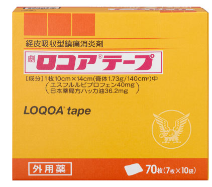
-
2017
Release of Claritin® EX, a switch OTC rhinitis treatment based on globally available drug Loratadine. Claritin EX contains the same quantities and components as a prescription pharmaceutical.
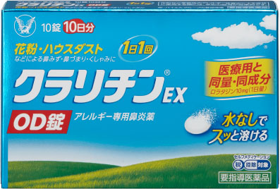
-
2019
Further strengthening our prescription drug business in Asia
To improve our international competitiveness, in 2016 we acquired a stake in the Vietnamese drug manufacturer Duoc Hau Giang Pharmaceutical JSC (DHG). Aiming to further strengthen our prescription pharmaceutical business in the Asian market, we made DHG a consolidated subsidiary by additional stake acquisition in 2019.
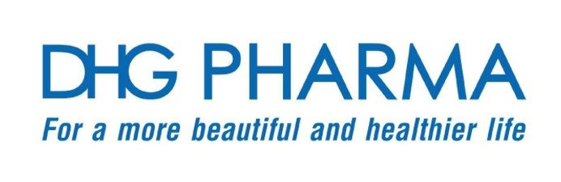
-
2019
Cultivating the skincare field
In 2018 we established Taisho Beauty Online, a site offering a wide range of products from beauty supplements to cosmetics. We also released the new whitening and moisturizing skincare brand AdryS, further extending our support for women’s beauty and health.
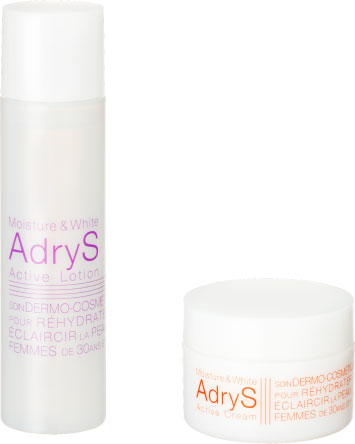
-
2019
Securing a firm business foundation in Europe
We became stakeholders in the French company UPSA, which has some of the leading products in the analgesic and cold medicine categories. This gave us a strong foothold in Europe, complementing our existing business base in Japan and Southeast Asia.
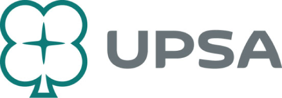
-
2020
From the Lipovitan brand, we launched Lipovitan Jelly, a convenient way of boosting one' energy amid daily life, and Lipovitan DX, a tablet-type quasi-drug for recovering from fatigue.
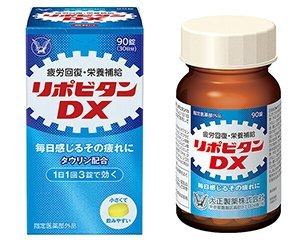
CLOSE -